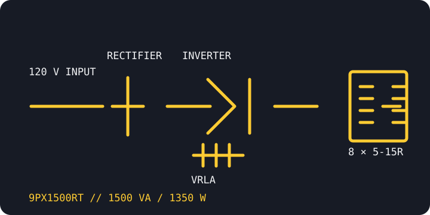

[ ONLINE DOUBLE-CONVERSION UPS // IDENTIFIED MODEL ]
Eaton 9PX1500RT
The North American 120 V rack/tower 9PX model, rated 1500 VA / 1350 W. This standard RT SKU uses a sealed lead-acid battery; the similarly numbered RT-L is a distinct lithium-ion product.

ARCHIVAL IDENTIFICATION: Preserve the suffix and battery chemistry in the inventory record. The standard 9PX1500RT and 9PX1500RT-L do not use interchangeable battery modules.
Exact model specifications
| Catalog category / topology | Online UPS — double-conversion topology with sine-wave output. |
|---|---|
| Electrical ratings | 1500 VA / 1350 W; 120 V nominal output, selectable within the documented North American range. Verify configured voltage at commissioning. |
| Transfer behavior | 0 ms inverter transfer in normal online operation; bypass and maintenance transitions follow their separate model-specific controls and limits. |
| Receptacles / connectors | Eight NEMA 5-15R output receptacles; NEMA 5-15P input on this North American model. Confirm markings and circuit limits on the actual unit. |
| Battery / runtime | Hot-swappable internal sealed lead-acid battery; supported external battery modules are optional. Use Eaton's 9PX1500RT runtime data at the measured load; runtime declines with battery age and condition. |
| Communication | LCD, USB and serial connections; optional Mini-Slot network/management card. Verify host support and installed card before relying on unattended shutdown or remote monitoring. |
| Compatibility / safety | Suitable loads must stay within the 1350 W rating and configured output voltage. Do not infer compatibility with 208/230 V equipment; use only the matching battery modules and follow Eaton battery, grounding and service instructions. |
Manufacturer references
- Eaton — 9PX1500RT product/SKU pageManufacturer model listing and support entry for the standard lead-acid SKU.
- Eaton — 9PX 1–3 kW technical datasheetManufacturer specifications and model-family technical data; match the regional SKU when using the tables.